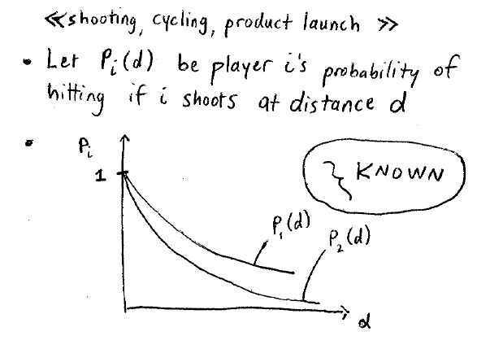
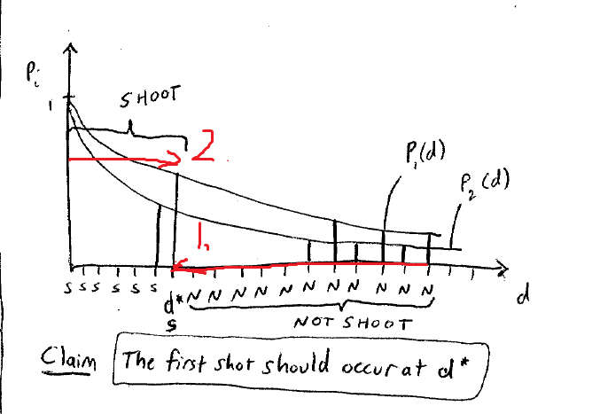

Lecture 16
chain of paradox
在上一节课中，讲到了一个关于垄断者和新进者的博弈例子。
当只有两者的sequential game时，我们通过之前通过收益举着分析有两种纳什均衡点：
- 进军者进入，垄断者允许进入。（backward induction推测是这种结果）
- 进军者不进入，是因为垄断者声张自己要严重打击。（实际上这种结果两者都不好）
我们下面重点分析第二种情形：通过收益矩阵进行分析，发现这种情况是一种纳什均衡点。
但是
如果我们假设有10个准备进军的玩家。
通过back induction，现在分析第10个玩家，那么垄断者一定不能通过对其制裁造成杀鸡儆猴的作用，因此第十个玩家毫不惧怕。最终垄断者和第十个玩家之间达成和平相处的局面。
第九个玩家也分析到这个层面了，于是就是到后面的达成和解了，因此也毫不惧怕，最后玩家9和垄断者达成和平共处。
...
最终就是全部和平共处。
这似乎和我们之前垄断者一开始要起到杀鸡儆猴的作用不太一样，与直觉是不一样的！
假设1%的几率垄断者是一个激进的人。
那么这个时候进军者就会想是否要进入。
因此这个问题的决策取决于是否是有疯子。现实生活着不可能这么的理想，因此会有杀鸡儆猴的现象存在。理想世界中，应该是和谐共处的。
（这波啊又是千层饼套路）/(ㄒoㄒ)/~~
- 小概率的不理性的事情会改变很多的结果。
声望是很重要的，哪怕有些不理性的因素在里面。
人质绑架千万不要和绑匪谈条件，道理是相同的。警察要建立威信
- 医生，教授，会计
扔海绵游戏
扔海绵，每个玩家有两个选择：
- 扔出自己仅有的一块海绵
- 往前移动一步
一旦仍中游戏结束，未中并且对方没有仍则游戏继续。
概率分布：

并且两个人的概率是不同的。
一个重要的假设：每一个选手射击的概率是已知并且确定的。
对于弱的一方进行决策：
决策指导：
- 若知道下一步对手一定不会出手，那么这一步自己一定是往前走一步
- 若对手下次一定出手：
决策的关键：目前自己投中的概率大于下一轮对手失手的概率。
因为只能投掷一次，这一次赢的概率就是投中的概率，下一次投赢的概率就是对手失误的概率（因为一旦对手投出，那么我接下来只要足够的接近，一定会赢）。
上面是整个游戏最关键的地方！ 
一开始正向的推理，然后得到不会射击的区间。使用dominance strategy进行推测
然后通过backward induction推测出整个的左区间都是射击区间。
实验证明：大部分的人投的太早了，他们高估了自己的实力。
- 这道难题通过dominance strategy 和BI来进行解决。
- 如果对手有点傻，因为不要提前射击
- 有时候耐心等待也是一个很好的策略！（通过之前的实验结果）